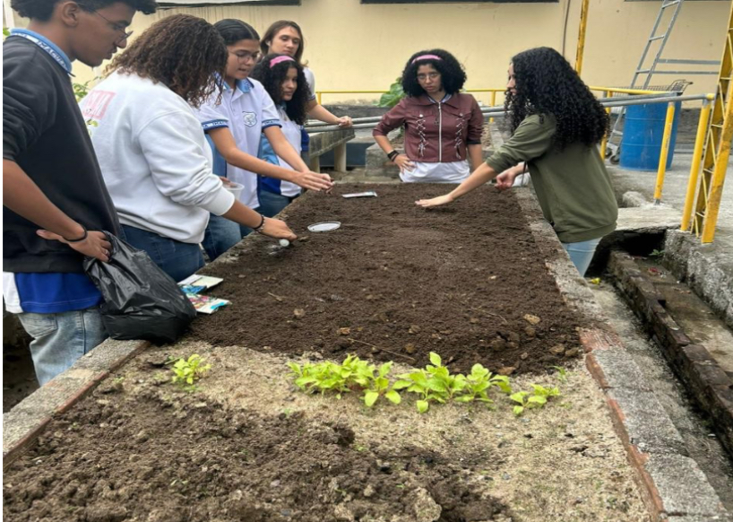

Quem Somos
Nós somos um grupo de jovens cientistas do Imaculada Conceição, localizado no Barro, Recife, Pernambuco. O grupo é composto por:

- Arthur Lemos
- Marília Lopes
- Sandra
- Giovanna Mendes
- Pedro Martins
- Bruna Belo
- Klarissa Farias